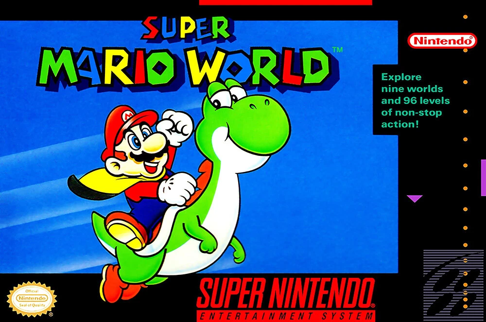

Revisió de Super Mario World (SNES)
Publicat el 21 de novembre de 1990
Super Mario World, llançat per a la Super Nintendo Entertainment System (SNES), és àmpliament considerat una obra mestra del gènere de plataformes. Amb la introducció de Yoshi i un món expansiu ple de secrets, va portar la jugabilitat de Mario a noves altures. La jugabilitat polida, els gràfics vibrants i la banda sonora memorable el converteixen en un títol imprescindible per a qualsevol aficionat als videojocs retro. Des de les illes de Dinosaur Land fins als desafiants nivells secrets, Super Mario World ofereix una aventura inoblidable que encara avui es gaudeix.